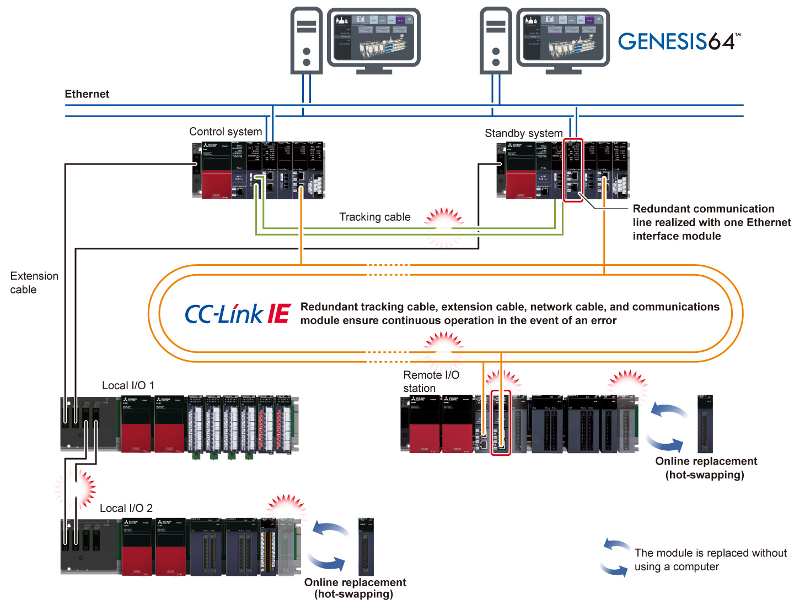
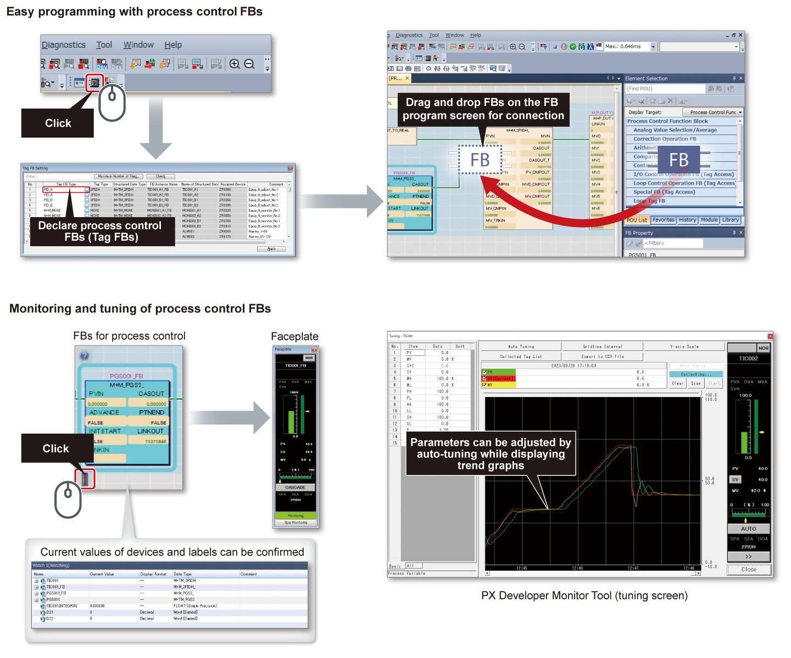
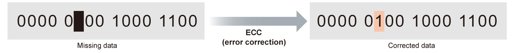
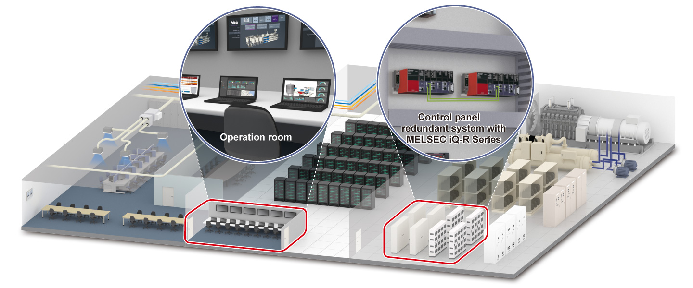
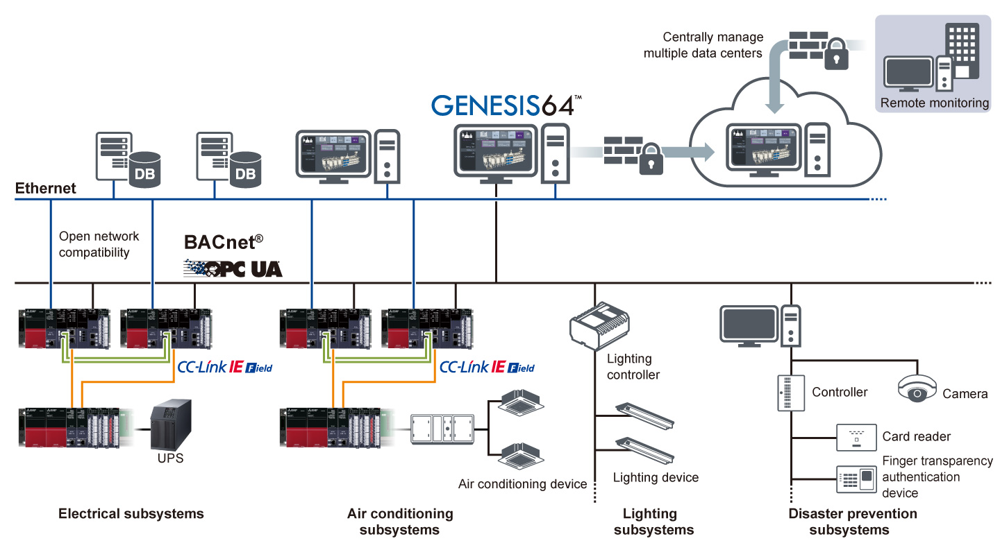

Controllers MELSEC iQ-R Series Fitur Produk -Solusi-

Meningkatkan keandalan pabrik dan sistem infrastruktur
Poin1Mewujudkan sistem kontrol yang sangat andal
- Dalam sistem redundan, operasi berkelanjutan dipastikan dengan beralih secara otomatis ke sistem siaga ketika terjadi kesalahan perangkat keras atau jaringan dalam sistem kontrol, mewujudkan sistem kontrol yang sangat andal dengan programmable controller untuk tujuan umum
- Risiko kegagalan titik tunggal dapat diminimalkan dengan menginstal sistem kontrol ganda yang terdiri dari unit dasar utama redundan dengan modul catu daya, modul CPU, dan modul jaringan; kabel pelacakan redundan, kabel ekstensi, dan kabel jaringan; serta modul kepala ganda dari stasiun jarak jauh
- Jika terjadi kesalahan pada kabel, stasiun I/O lokal, dan stasiun I/O jarak jauh, penggantian online dimungkinkan tanpa menghentikan operasi modul CPU

Poin2Mengkonfigurasi sistem kontrol proses dengan pemrograman yang mudah
- Perangkat lunak rekayasa GX Works3 menyediakan lingkungan pemrograman yang intuitif di mana program kontrol proses dapat dengan mudah dibuat dengan menghubungkan blok fungsi seperti Tag FB untuk kontrol proses pada layar dengan operasi drag & drop
- Tag FB untuk kontrol proses memungkinkan pemantauan pada faceplate, tampilan tren pada alat pemantauan PX Developer, dan pengaturan parameter memanfaatkan auto-tuning, sehingga membuat penyesuaian startup sistem lebih mudah
- Ladder, diagram blok fungsi (pemrograman kontrol proses), bagan fungsi sekuensial, dan teks terstruktur didukung

Poin3Mengkonfigurasi sistem yang sangat andal dengan modul CPU yang dioptimalkan untuk kontrol proses
- Modul CPU proses dan modul CPU proses SIL2 dilengkapi dengan fungsi ECC (koreksi kesalahan) dalam memori perangkat/label, memungkinkan koreksi kesalahan 1-bit pada memori
- Produksi berkelanjutan terjamin dalam industri seperti makanan, minuman, kimia, dan infrastruktur di mana kualitas produk sangat dipengaruhi oleh kesalahan data

Poin4Mengkonfigurasi sistem yang sangat andal yang dapat memasok energi secara stabil dan efisien
- Pasokan dan penggunaan energi seperti listrik dan gas di pabrik, gedung, dan pusat data dapat dipantau dengan SCADA software GENESIS64™ dikombinasikan dengan sistem redundan
- GENESIS64™ memvisualisasikan konsumsi energi, membantu memperkirakan pasokan energi yang efisien
- Sistem redundan memastikan operasi berkelanjutan infrastruktur dengan beralih sistem jika terjadi kesalahan
Pusat data yang diimplementasikan dengan GENESIS64™ dan sistem redundan

